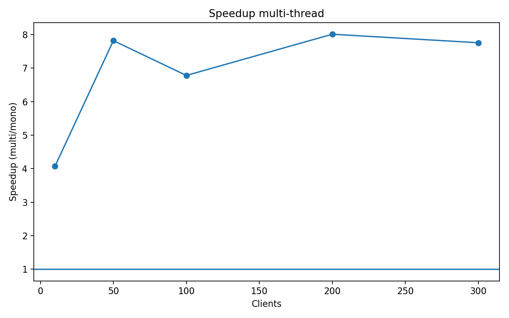
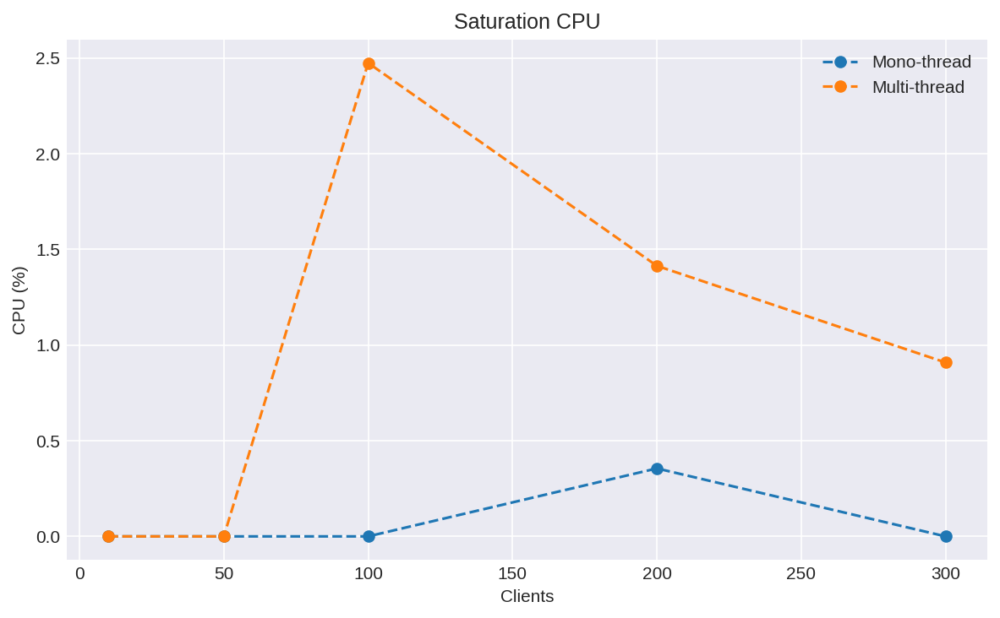

📈 Graphiques de performance




| Débit moyen (req/s) | Latence P99 moyenne (ms) | CPU moyen (%) | Mémoire moyenne (MB) | |
|---|---|---|---|---|
| server | ||||
| mono | 18.62 | 4426.27 | 0.12 | 1.97 |
| multi | 125.21 | 891.92 | 1.18 | 2.16 |
Globalement, les mesures de benchmark montrent que le serveur multi-thread offre un débit moyen d’environ 125.2 requêtes par seconde, contre 18.6 req/s pour le serveur mono-thread. Sur l’ensemble des configurations testées, cela correspond à un gain moyen de performance d’environ 6.73× en faveur de l’architecture multi-thread.
En termes de latence, la mesure P99 (latence subie par les 1 % de requêtes les plus lentes) reste plus favorable au serveur multi-thread, avec une P99 moyenne de 891.9 ms contre 4426.3 ms pour le mono-thread. Cela indique que le multi-thread absorbe mieux les pics de charge et réduit les phénomènes de saturation lorsque le nombre de clients simultanés augmente.
À la charge la plus élevée (≈ 300 clients), on observe un débit de 143.8 req/s pour le serveur multi-thread contre 17.7 req/s pour le mono-thread. La latence P99 atteint 6776.0 ms côté mono, alors qu’elle est de 1892.9 ms côté multi, ce qui confirme que le mono-thread atteint rapidement un plateau de performance tandis que le multi-thread continue à exploiter les cœurs CPU disponibles.
L’analyse de l’utilisation CPU montre que les deux architectures finissent par saturer les cœurs disponibles, mais le serveur multi-thread parvient à transformer cette consommation CPU en débit utile plus élevé (CPU moyen ≈ 1.2 % contre 0.1 % pour le mono-thread). La consommation mémoire reste globalement maîtrisée pour les deux serveurs, avec une légère surconsommation attendue côté multi-thread liée à la gestion des threads et de la file FIFO.
En pratique, l’architecture multi-thread avec file FIFO bornée constitue le meilleur choix pour un environnement de production soumis à des pics de charge importants, à condition de maîtriser la complexité de synchronisation et l’arrêt propre des threads. Le serveur mono-thread conserve néanmoins un intérêt pédagogique fort et peut être adapté à des scénarios simples ou à faible charge, où la lisibilité du code prime sur la performance brute.
Choisis un nombre de clients pour comparer les métriques entre le serveur mono-thread et le multi-thread. Le point de mesure le plus proche sera utilisé pour chaque serveur.